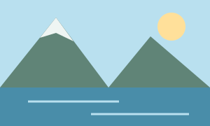

Una tarjeta de producto
Observa el conjunto o el enlace indicado, según la instrucción.
Observa el conjunto o el enlace indicado, según la instrucción.
Quedan pocas unidades.
Este texto ocupa varias líneas para comparar la mirada sobre contenido amplio con la de enlaces pequeños. Lee con calma y sigue cada indicación. No necesitas completar una compra, usar el ratón ni escribir datos. Al cambiar el borde, dirige los ojos al nuevo objetivo y conserva una postura natural.
